ATARI ST · SEMATOR 1.1.603
Your ST games.
As you never saw them.
Wider worlds, smoother motion, sharper 3D and farther horizons, game by game.
Every change is a switch you choose, and the original is always one switch away.
Windows & Linux · Your own disks (ST, MSA, STX, IPF, zips) · No TOS ROM needed
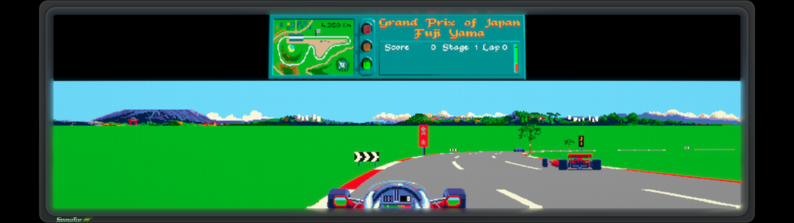
GO BEYOND 4:3
More world.
Never stretched.
Widescreen shows the parts of the game that really exist beyond the edges: 16:9, 21:9, even 32:9 in some games. The game's own panels stay sharp on top, and fixed rooms stay 4:3, as the artists drew them.

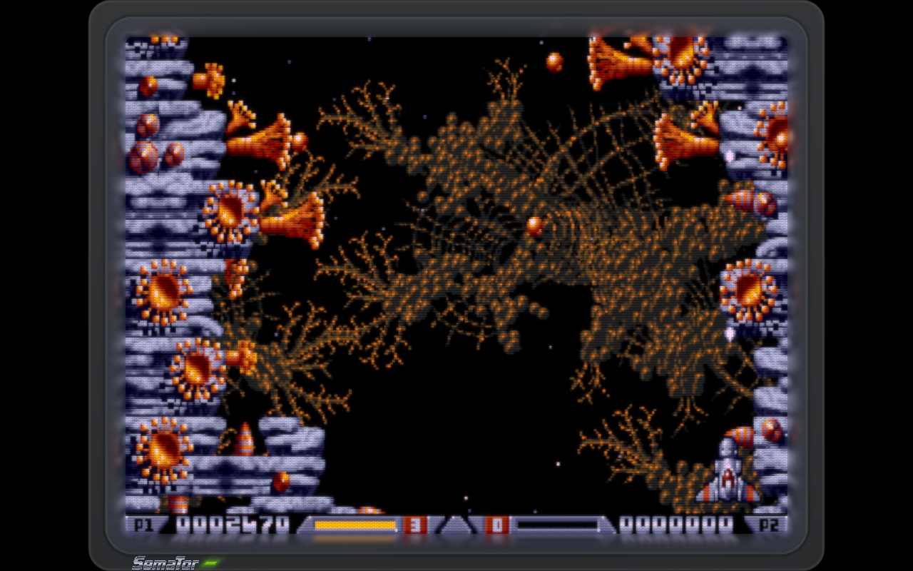

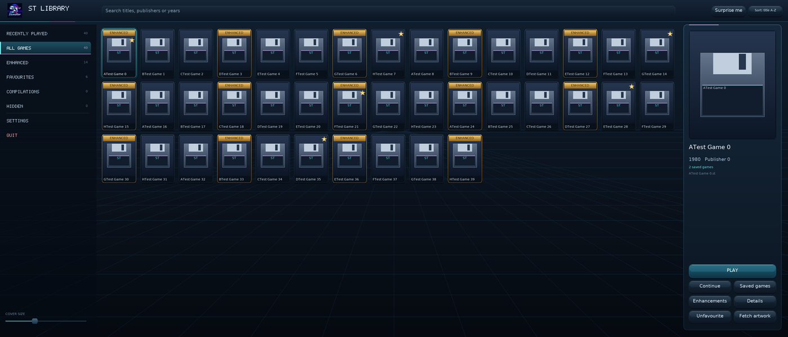
SMOOTH MOTION · RUN-AHEAD
As smooth as
your display.
Smooth Motion gives one new picture for every refresh of your screen: 60, 120 or 144 a second, on a fixed-rate or variable-refresh display. In-between pictures come from the game's own next frame, worked out ahead of time, so nothing lags and nothing is invented. Run-ahead cuts input lag further where you want it.
Measured, not promised.
Starglider at 120 Hz: about 118 new pictures every second in 1.1.603, on a variable-refresh screen too.
Every kind of game.
Scrolling shooters, platformers, racers and filled-3D worlds each get their own route.
Picture only.
Smooth Motion never changes the game: its memory and sound stay byte for byte the original's.
RENDER RESOLUTION · ANTI-ALIASING · DRAW DISTANCE
The 3D,
redrawn sharp.
For 3D games SemaTor captures what the game's own 3D code draws and redraws it on your graphics card: up to four times the resolution with anti-aliasing, and a draw distance up to eight times as far, with the game's own objects and their behaviour out there too, not just more landscape.
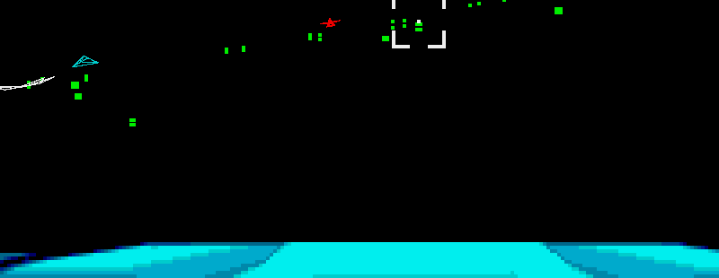

Draw distance in 1.1.603 includes Hard Drivin', Armour-Geddon, Simulcra, RoboCop 3, F1GP (with every car of the race), Hunter, Virus and Starglider, among others. See the enhanced games for each game's options.
REAL GAMEPLAY / FROM THE 1.1.603 BUILD
See it in
your games.
Pictures taken from SemaTor itself, each with an enhancement on. Games are not included; the pictures are small captures of play.

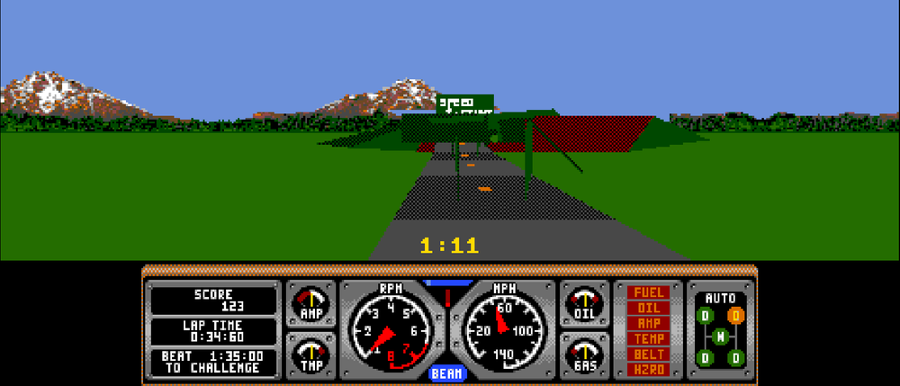

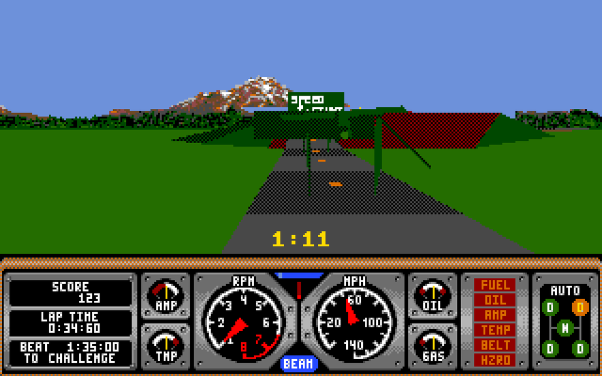

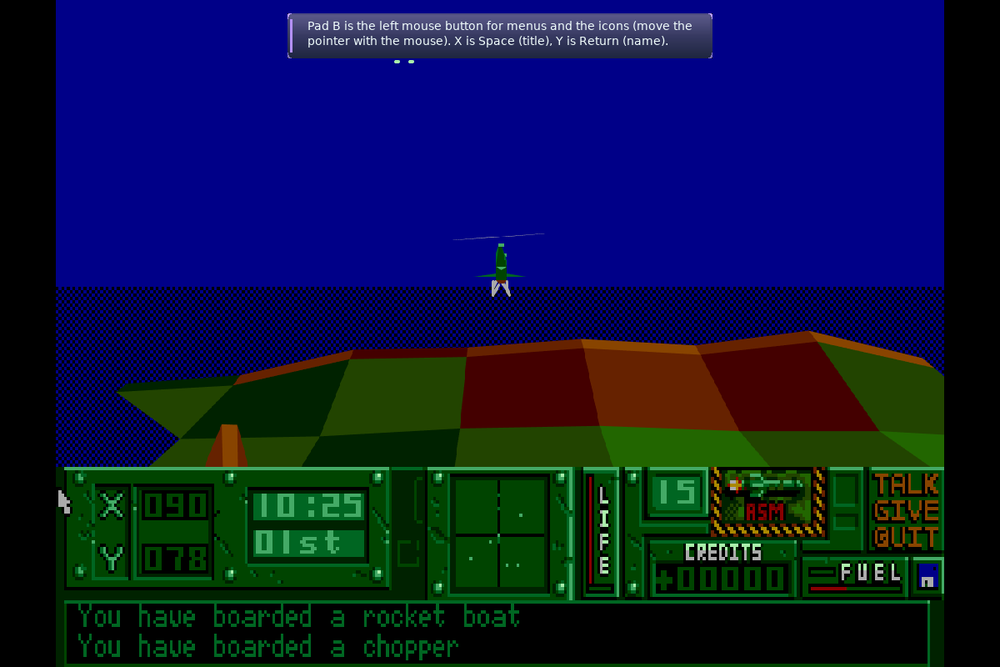

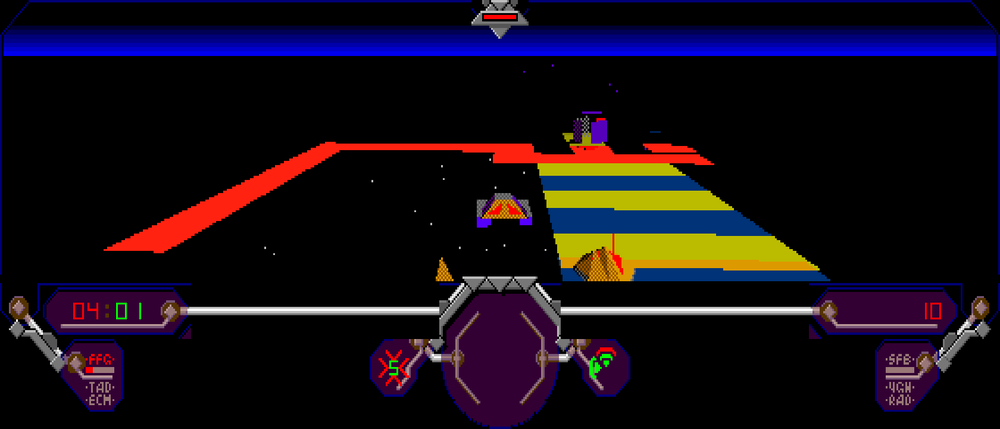

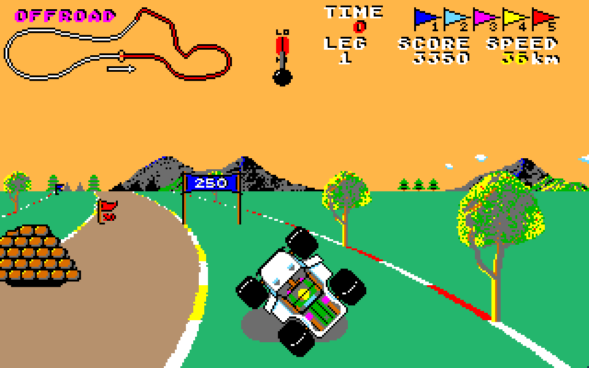

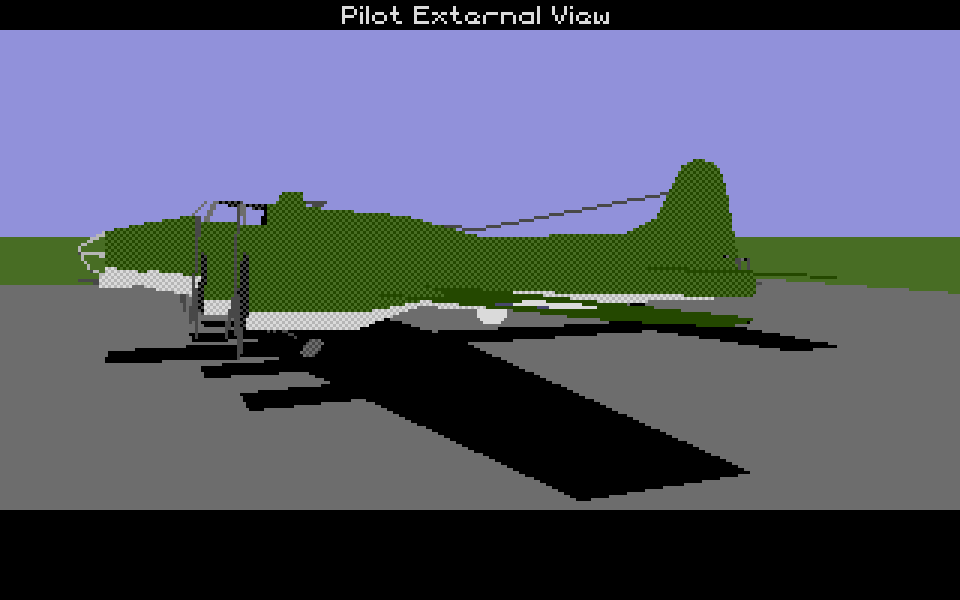
All of these are options you switch on per game: see each game's list.
THE THINGS ONLY SEMATOR DOES
Little extras.
Big difference.
Aim with your mouse.
Light-gun games such as Westphaser and Crazy Shot are found by themselves: the mouse aims, the left button fires, and a crosshair shows where.
Answered for you.
Games that ask for a word from the manual or a code wheel, such as Starglider 2, Elite, F-19, Midwinter and Populous II, get it answered at their own prompt. One switch brings the question back.
Fly your way.
Flight games like Starglider can swap up and down for mouse, pad and touch.
Fast, never too fast.
Where a game slows down, a CPU boost helps, and it steps back by itself if your PC can't keep the ST's real speed.
Less waiting.
Disk loading can run fast, and steps aside by itself for disks that need exact timing.
Built for exactness.
The sound chip now counts tones as a real STF does, and the ST's timing is checked game by game against reference results.
ALL OFF BY DEFAULT · REMEMBERED PER GAME
The original first.
Then make it yours.
Every game starts as the original. Turn on what you like, and SemaTor remembers it for that game. Each option sits in the same place in every game: Picture, Motion and speed, View, Gameplay, Audio, Controls, then Cheats.
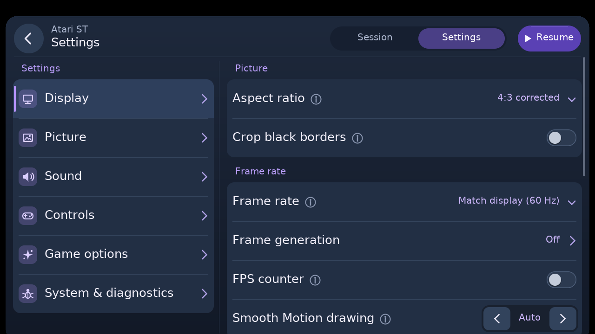
SEMAOS
A desktop
worth opening.
Your library with covers, favourites and recent games, the Jukebox for game music, saved games, pictures, notes and Creator tools, on SemaOS, a desktop with the feel of the ST's own. The same desktop is home for SemaDrive and SemaBench.

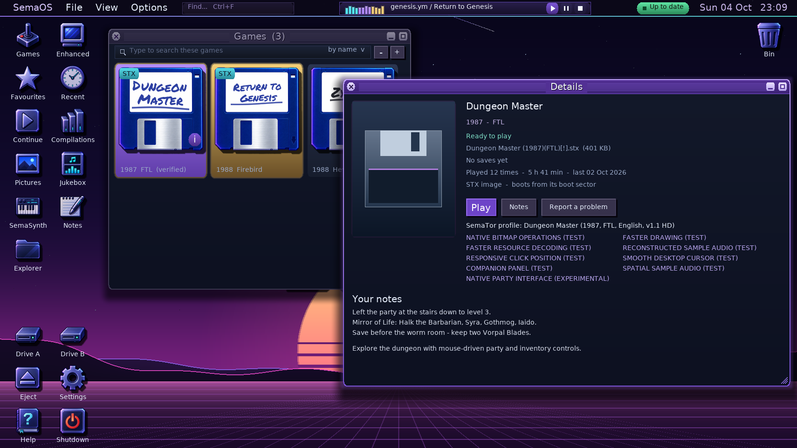